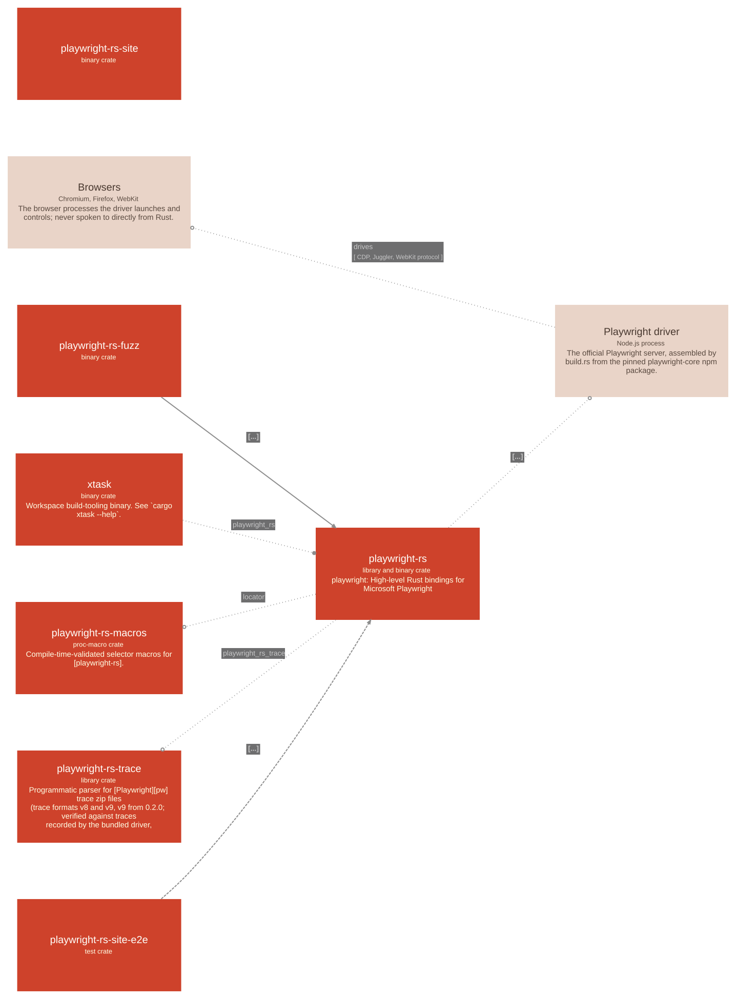

playwright-rust

Containers
| Name | Technology | Description |
|---|---|---|
| playwright-rs | library crate | playwright: High-level Rust bindings for Microsoft Playwright |
| playwright-rs-fuzz | binary | |
| playwright-rs-macros | proc-macro crate | Compile-time-validated selector macros for [playwright-rs]. |
| playwright-rs-site | binary | |
| playwright-rs-site-e2e | test crate | |
| playwright-rs-trace | library crate | Programmatic parser for [Playwright][pw] trace zip files (trace formats v8 and v9, v9 from 0.2.0; verified against traces recorded by the bundled driver, playwright@1.63.0). |
| xtask | binary | Workspace build-tooling binary. See |
Externals
| Name | Kind | Technology | Description | Used by |
|---|---|---|---|---|
| Browsers | process | Chromium, Firefox, WebKit | The browser processes the driver launches and controls; never spoken to directly from Rust. | node_driver (uses: drives) |
| Playwright driver | process | Node.js process | The official Playwright server, assembled by build.rs from the pinned playwright-core npm package. | playwright_rs.server.playwright_server (uses: spawns) playwright_rs.server.transport (uses: exchanges JSON-RPC frames with) |